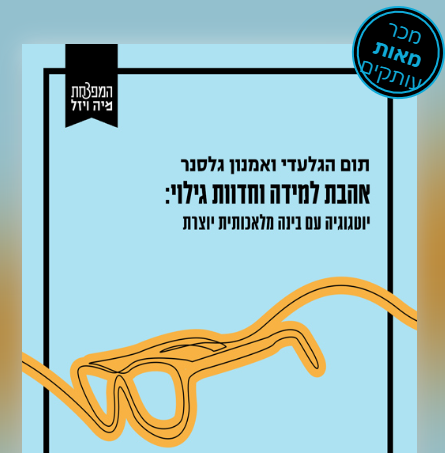
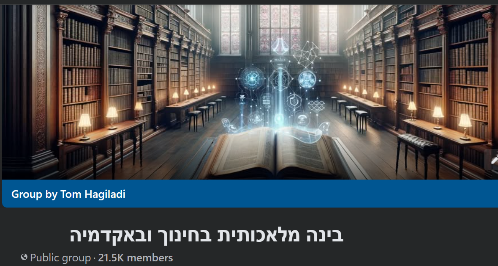
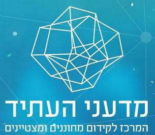
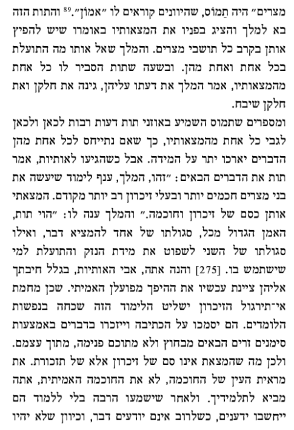
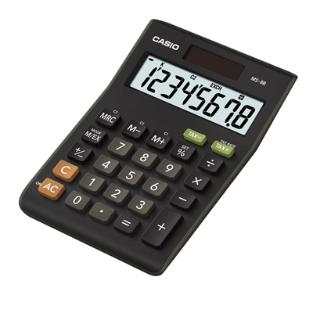
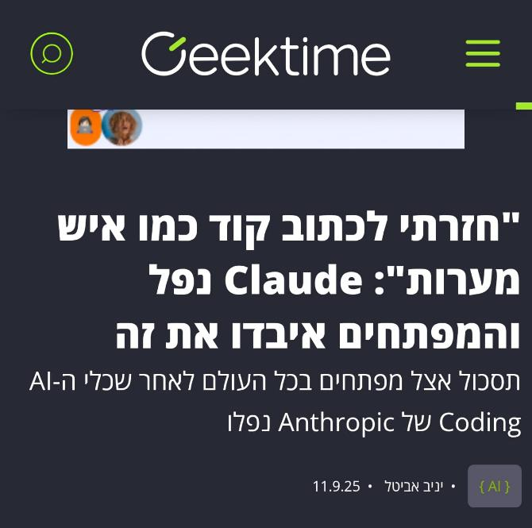
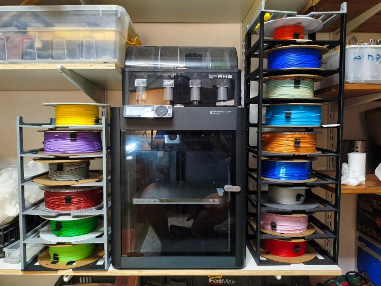
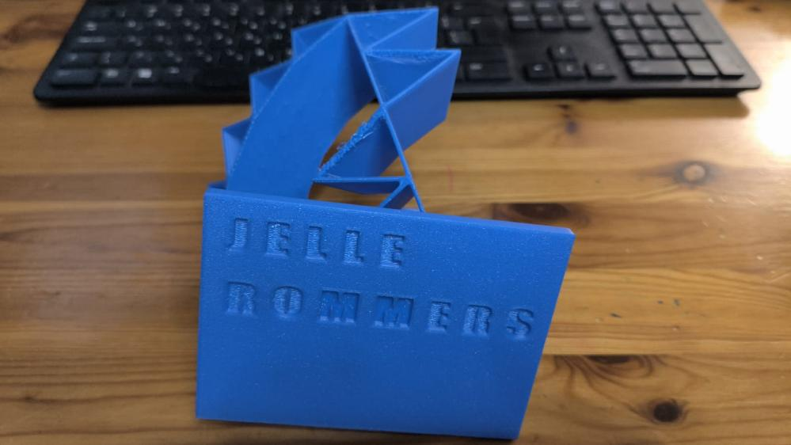
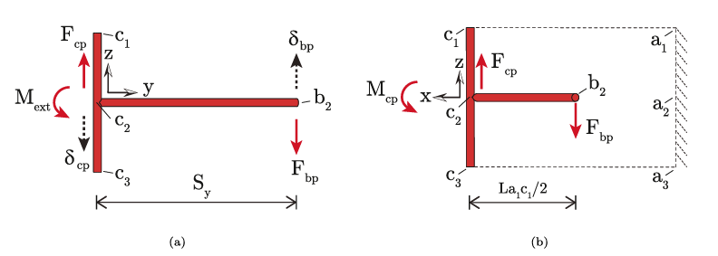
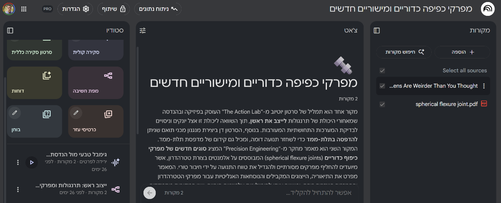

תום הגלעדי כנס פתיחת השנה של המדריכים הפדגוגיים · מכללת בית ברל · 13.10.2026
נעים להכיר
עשרים שנה כאיש חינוך, חלקן בניהול מערכות חינוך: הקמה וניהול בית ספר, סגן מנהל פסג"ה תל אביב-יפו, אחראי פן חברתי-רגשי במדעני העתיד
שלוש השנים האחרונות: רק הממשק שבין בינה מלאכותית לארגוני למידה והוראה - משרד החינוך, האקדמיה, וליווי התייעלות במגזר העסקי
מנחה הפודקאסט "דיבורי בינה", מנהל את קהילת "בינה מלאכותית בחינוך ובאקדמיה", וכותב יחד עם פרופ' אמנון גלסנר את "אהבת למידה וחדוות גילוי"
ובבית ברל: בקיץ האחרון, שני מפגשים עם צוות החינוך המיוחד



איפה אנו נמצאים מבחינת התקדמות הטכנולוגיה
ומה נעשה היום
מהשטח
האם כך נראה שיעור של סטודנט השנה?
הסטודנטאני צריך ללמד מחר על מעגל ועיגול. תן לי מערך שיעור.
הבינהבשמחה! הנה מערך שיעור מלא ל-45 דקות: פתיחה (5 דק'), הקניה (15 דק'), תרגול (20 דק'), סיכום (5 דק')...
ולמחרת בכיתה: המערך מוקרא מהדף.
מי ראה את זה השנה?
מערך שיעור: מעגל ועיגול
נוצר על ידי בינה מלאכותית, לא נערך
מפת הבוקר
ארבעה רעיונות, ואחר כך עושים
01 שני מסלולים: חשיבה או קיצור דרך
02 מתיאוריה לפרקטיקה
03 אמנות שאילת השאלות
04 למידה והערכה
05 אחרי ההפסקה: סדנה
השאלה כבר לא "איפה הכפתורים"
רוב המורים והסטודנטים כבר יודעים שיש מודל שפה שכותב, מסכם ומתכנן.
יש מובילים ויש מאחרים, אבל הם כבר בקצוות.
השיחה המשמעותית היום: איך עושים פדגוגיה עם בינה מלאכותית.
סוגיית הניוון: עוד מאותו הדבר, או סיפור חדש?

אפלטון, לפני 2,400 שנה: הכתב יביא שכחה, ויעניק "את מראית העין של החוכמה".

ואז: וייז, מחשבון וטלפון. שחררנו את הניווט, החישוב והזיכרון, והסתדרנו.

ספטמבר 2025: הכלי נפל, ומפתחים גילו שהם כבר לא יודעים לכתוב קוד לבד.
אז מה שונה הפעם?
אותו כלי, שני מסלולים
מסלול הקיצור
נכנסים כדי "להעביר את השיעור"
מבקשים תוצר
מעתיקים, ויוצאים
החשיבה נשארת בחוץ
מסלול החשיבה
נכנסים כדי לבנות את השיעור הכי טוב שאפשר
הבינה כמוח נוסף, לסיעור מוחות
הלוך ושוב: "זה טוב, זה לא, כאן אולי"
החשיבה מתעצמת
אותו כלי בדיוק. הכוונה שאיתה נכנסים לשיחה קובעת את המסלול.
המוטיבציה מכריעה
כשאין מוטיבציה ללמוד
הבינה = כלי עקיפה
כשיש מוטיבציה ללמוד
הבינה = מנוע צמיחה
הטכנולוגיה היא לא הבעיה. מוטיבציית המשתמש היא המפתח לבעיית הניוון.
ההבדל בפועל, בעולם של סטודנט להוראה
בקשה קצרה"תן לי מערך שיעור על מעגל ועיגול"
התוצאה: מערך גנרי, שמוקרא בכיתה
שיחת חשיבה"אני סטודנטית להוראת מתמטיקה בכיתה ו'. יש בכיתה 28 תלמידים, ושלושה מתקשים בקריאה. אני רוצה שיבינו את ההבדל בין מעגל לעיגול, ולא רק ישננו. אל תכתוב לי שיעור - עזור לי לחשוב עליו. קודם תשאל אותי מה חסר לך."
התוצאה: שיחה, שבסופה עומד מערך שהוא שלה
ומה זה אומר למד"פ?
01
מקבלים מראש את מערך השיעור
←
02
צופים בשיעור
←
03
משוב על אלמנט אחד או שניים
←
04
שיעור דידקטיקה לכל הקבוצה
הצעה: לנהל שיחה על השיחה עם הבינה, ולא רק על המערך. ואם הסטודנט מרגיש בנוח, שיראה לכם אותה.
רפרוף על שיחה של סטודנט עם הבינה מלמד את המד"פ המון: איפה הוא חשב, איפה ויתר, מה שינה.
ומשם, שיחה פורייה על התכנון עצמו.
רעיון שני
מתיאוריה לפרקטיקה
01 שני מסלולים: חשיבה או קיצור דרך
02 מתיאוריה לפרקטיקה
03 אמנות שאילת השאלות
04 למידה והערכה
05 אחרי ההפסקה: סדנה
למדתי את התיאוריה. איך זה נראה בדקה ה-12 של השיעור?
למידה מבוססת פרויקטים
למידה מבוססת מקום
שיטת מונטסורי
כיתה הפוכה
פאזל (ג'יגסו)
הוראת חקר
הוראה דיפרנציאלית
נוירופדגוגיה
הפער הוותיק בהכשרת מורים: בין התיאוריה שלמדנו לבין הרגע שבו עומדים מול הכיתה.
דוגמה מפתח תקווה: השתלמות למנהלים בתוכנית נוירופדגוגיה
הבינה מגשרת בין תיאוריה לפרקטיקה
תיאוריה
איך המוח לומד: מעגל הדופמין, קשב, אחסון בזיכרון
←
שיחה עם הבינה
"הכיתה שלי ככה וככה. אני רוצה לשים דגש על העקרונות האלה. מה את מציעה?"
←
פרקטיקה
מהלך שיעור דקה אחרי דקה, לכיתה הזאת
הבינה כקביים, ולא כמי שמקבלת את הסמכות. והמשחק כאן הוא של משתמש ביקורתי ואינטליגנטי.
הדגמה: שיעור ברוח פרקטיקה נתרגל בסדנה
הפרומפט"אני סטודנטית להוראת מתמטיקה בכיתה ו', ומתכננת שיעור על מעגל ועיגול ברוח למידה מבוססת מקום. אל תכתוב לי שיעור מוכן. קודם שאל אותי שלוש שאלות על הכיתה. אחר כך הצע מהלך, והסבר איזה עיקרון של הפרקטיקה כל שלב משרת."
שימו לב למה שהבינה שואלת לפני שהיא עונה.
ולמה שאני עושה עם ההצעה: מסכים, דוחה, מחדד.
הדגמה חיה בג'מיני
בריסטולים דיגיטליים נתרגל בסדנה
פעם נכנסנו לכיתה עם בריסטול. היום אפשר להכין כלי שתפור לשיעור אחד, בלי לדעת לתכנת.
גיל רך
מעבדת ערבוב צבעים
גוררים שני צבעים, ורואים מה נוצר
חינוך מיוחד
אורזים תיק לים
משחק מיון עם משוב חיובי, בלי "טעות"
יסודי
משחק הזיווגים של הטבע
מתאימים בעלי חיים לסביבה ולמזון
על-יסודי
לוח פרבולה
משנים פרמטר, והגרף זז מול העיניים
אנגלית
משחק זיכרון
הופכים קלפים ומחפשים זוג: מילה באנגלית ותמונה
ולכל כיתה: אפליקציה מלווה לעבודה בקבוצות - תפקידים, שלבים וטיימר, במקום דף הנחיות.
הדגמה: לוח פרבולה, בשלוש דקות
בקנבס של ג'מיני"בנה לוח אינטראקטיבי שמראה פרבולה, עם שלושה סליידרים לשינוי הפרמטרים. כשמזיזים סליידר, הגרף זז מיד. בעברית, מימין לשמאל, גדול וברור להקרנה בכיתה. לפני שאתה בונה - תשאל אותי מה חסר לך."
זמין גם בגרסה החינמית.
אותו דבר אפשר לעשות גם בקלוד, וחלק מהסטודנטים כבר שם.
גיבוי: לוח שהוכן מראש (לחיצה פותחת)
רעיון שלישי
אמנות שאילת השאלות
01 שני מסלולים: חשיבה או קיצור דרך
02 מתיאוריה לפרקטיקה
03 אמנות שאילת השאלות
04 למידה והערכה
05 אחרי ההפסקה: סדנה
מה אנחנו מבקשים לפתח?
לא לומדים שיודעים בעיקר להפיק תשובות בעזרת הבינה,
אלא לומדים שנעזרים בה כדי להתבונן, להסתקרן, ליזום, לשאול שאלות טובות, ולהחליט כיצד ללמוד.
פרופ' אמנון גלסנר
השיחה עם הבינה: פיגום, לא תסריט נתרגל בסדנה
לעורר סקרנות
"מה יכול להיות מעניין עבורי ללמוד, להבין או לברר על הנושא?"
"אילו שאלות מסקרנות אפשר לשאול על הנושא הזה?"
"מה בנושא עשוי להפתיע אותי, או לערער משהו שאני חושב שאני יודע?"
"אם אספר לך מי אני ומה מעניין אותי, אילו כיווני למידה יכולים להתאים לי?"
לנסח שאלה שמניעה למידה
"איזו שאלה תניע למידה עם גילוי והעמקה, ולא רק תשובה קצרה?"
"איך לנסח את השאלה שלי פתוח יותר, כך שלא תכוון לתשובה אחת?"
"מה אני רוצה להשיג: להבין, להסביר, ליצור, לפתור, להחליט?"
"מאיפה כדאי לי להתחיל, בלי לקבוע מראש את כל המסלול?"
לבחור דרך ומקורות
"בהינתן שאני לומד טוב כאשר..., אילו דרכי למידה יתאימו לי, ולמה?"
"מאילו סוגי מקורות כדאי להתחיל, ואילו לשמור להמשך?"
"אילו דרכים יש ללמוד את זה: קריאה, ניסוי, תצפית, יצירה, סימולציה?"
"איך אבדוק שהמקורות עונים על השאלה שלי, ולא רק קלים וזמינים?"
הבינה לא מחליטה במקום הלומד. היא עוזרת לו לברר את ההחלטות שלו.
סרטון, שתי דקות
מראית עין של חכמה
מה התפקיד של בית הספר, כשהתשובות כבר חינמיות?
רעיון רביעי
למידה והערכה
01 שני מסלולים: חשיבה או קיצור דרך
02 מתיאוריה לפרקטיקה
03 אמנות שאילת השאלות
04 למידה והערכה
05 אחרי ההפסקה: סדנה
כתיבה של מילים אינה עדות ללמידה
הפרדיגמה הישנה לא הייתה טובה. היא פשוט עבדה: התלמיד כתב, קיבל ציון, וכולנו אמרנו "הוא למד".
הבינה חשפה את זה: התוצר הטקסטואלי כבר לא מעיד על למידה.
אז מה כן מעיד?
פוטוסינתזה: מ"תעתיקו את ההגדרה" לחקירה
פוטוסינתזה היא תהליך שבו הצמח משתמש באנרגיית השמש כדי להפוך פחמן דו-חמצני ומים לסוכר.
← תעתיקו למחברת
לפני
מה זה "פוטו"? ומה זה "סינתזה"?למה העלים ירוקים?מה יקרה לצמח בחושך?איך זה קשור לאוויר שאני נושם?מה אם הייתי צמח?
אחרי: התלמידים שואלים את הבינה, מתוך מה שמעניין אותם
המורה לא מעביר את ההגדרה. המורה מנחה את השיחה.
איך נראית למידה אותנטית?
איך נראית למידה אותנטית?
איך נראית למידה אותנטית?

איך נראית למידה אותנטית?

איך נראית למידה אותנטית?
איך נראית למידה אותנטית?
איך נראית למידה אותנטית?
איך נראית למידה אותנטית?

איך נראית למידה אותנטית?

הפרדיגמות השולטות, מול למידה אותנטית
הפרדיגמות השולטות
למידה אותנטית
המורה כמוקד הידע
הידע מבוזר
למידה סביב תוכנית קבועה מראש
מסלול גמיש, דינמי ולא לינארי
הערכה סטנדרטית, טקסטואלית ומכוונת ציון
הערכה מבוססת יישום
הפרדה בין תחומי הדעת
שילוב בין תחומים כברירת מחדל
הלומד כצרכן פסיבי של ידע
הלומד כיוצר אקטיבי
זמנים שמכתיבה מערכת השעות
למידה לפי הספק
מרחב בחירה מוגבל ומדומה
אוטונומיה של הלומד
להיות מד"פ בעידן הבינה המלאכותית
הלומד חוקר עם הבינה, מתוך מה שמעניין אותו.
המורה כבר לא מעביר ידע. הוא חונך של מסע למידה אישי.
המד"פ מלווה את הסטודנט ללמוד להיות החונך הזה.
המד"פ
המורה
הלומד והבינה
הפסקה
15:00
אחרי ההפסקה: עושים. כדאי לחזור עם מחשב פתוח ומחובר לחשבון גוגל.
הסדנה: שלוש תחנות, אתם בוחרים
את/ה עכשיו הסטודנט/ית שלך. בוחרים נושא שהוא מלמד החודש, ויוצאים לדרך.
1
שאלות פוריות
שואלים את הבינה שאלות שפותחות את הנושא, ולא רק סוגרות אותו.
כ-15 דקות
2
מתיאוריה לפרקטיקה
בוחרים פרקטיקה פדגוגית, ומתכננים איתה שיעור בשיחת חשיבה.